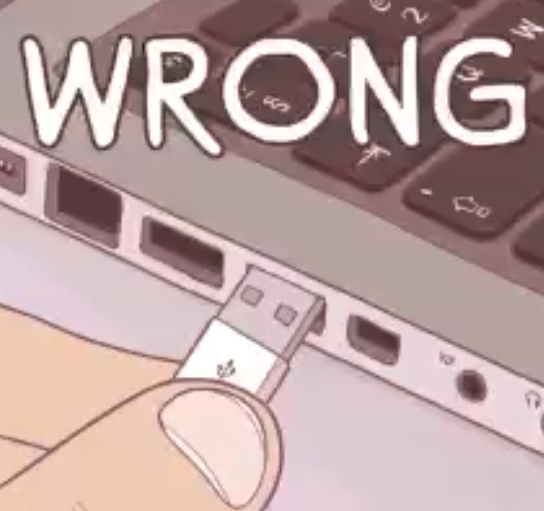

Poka-Yoke es un término japonés ポカヨケ formado por dos palabras: Poka (Evitar) y Yokeru (Error inadvertido).
Sería algo como “evitar el error inadvertido” o como comúnmente se denomina “a prueba de errores”. Esto es algo que se aplica mucho en cualquier industria.
Esto garantiza la seguridad en maquinaria pero no lo sólo eso, mejora el proceso y la calidad del producto final. Si sólo hay una manera de hacerlo, no hay posibilidad de hacerlo mal.
Requiere un análisis conciencudo y un conocimiento específico del donde se vaya a aplicar.
Este término lo introdujo un ingeniero, Shigeo Shingo sobre los años 60 en la empresa Toyota. Toyota, y en general la industria del automovil ha hecho mucho por la mejora de procesos y en la industria alimentaria hemos acoplado muchas de sus ideas de mejora.
Ellos pensaban que la causa de los errores estaba en los trabajadores (a mi el "error humano" me da urticaria, no me gusta y creo que es algo simplista). Algunos llaman al sistema poka-yoke "a prueba de tontos", la verdad, tampoco me gusta, "evitar errores involuntarios" es mejor
Hay muchos tipos de poka-yokes: físicos, secuenciales (si no pasa algo en concreto, no sigue el proceso), de agrupamiento (no te pueden sobrar piezas cuando montas un mueble de ikea), de información (como una plantilla que te indica qué es lo correcto)
Algunos poka yokes podrían ser: - un código de colores: rojo con rojo, azul con azul en la conexión de cables, por ejemplo, - un diseño que sólo permita un tipo de conexión. - flechas o letras que indiquen la secuencia...
@farmagemma